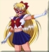

Entity » The Idol
» Fuku Changes
Sailor V Fuku: Anime Style
In the anime, Sailor V isn't show as much as the manga. However, there is an anime version of the Sailor V fuku, as provided on the right. It's actually quite different from the Sailor Venus fuku, and we'll take a look below. First of all, there's a red eye mask for Sailor V that you do not see on Sailor Venus or any other senshi. Sailor V has absolutely no tiara on her forehead, and the choker is white instead of orange. The choker has a crescent moon in the center as well. Along her shoulders, Sailor V has 2 white felt pads and no rings around her shoulders like Sailor Venus had. Her collars are navy blue with one single red line near the border. Her bow is red instead of blue, and she has an orange, round shaped ornament in the center of her bow. Her gloves have the usual orange rings around the end, and ends at her elbow, so no big change there. However, her upper outfit seems to be white in front and red on the sides and in the back. Her shirt is also a lot shorter and not connected to her skirt, revealing her stomach. ^-^ She has a blue skirt instead of orange, and she has no bow on the back of her waist. Her shoes, although not shown here, are still Mary-janes, but they're red instead of orange now.
Sailor V Fuku: Manga Style
click to see the manga Sailor V fuku
Sailor V's manga fuku is also slightly different from the anime version of the Sailor V fuku. In the manga, Sailor V has a crescent moon on her head but no tiara. The crescent moon was used as a deception and was later replaced by the tiara when Sailor V became Sailor Venus. The red lines that were near the border of her collar in the anime are now *at* the edge, bordering both sides of her collar. Her collar is no longer connected to her chest bow, as the anime version did. The two felt pads are still on her shoulder, but she now has sleeves of white and red that go down to the middle of her upper arm, ending with blue and red stripes. the ornament in the center of her bow is more yellow than orange, and her gloves are much shorter now. Instead of ending at her elbow, they end around the middle of the lower part of her arm with a single yellow strip. The upper outfit still ends a bit short, showing her stomach, and she still has no bow on the back of her waist. But she now has a red strip bordering the end of her blue skirt instead of all blue.
« Check out the Sailor Venus fuku
{kind=link}